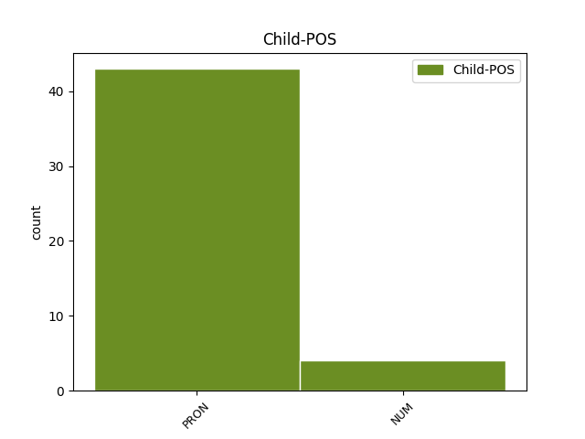

Distribution of features within this leaf

Agreement Rules sorted by frequency.
- When the dependent token is the appositional modifier(appos) of the head token, and the head token is PRON and the dependent token is PRON.
1 Det _ _ _ _ 0 _ _ _
2 er _ _ _ _ 0 _ _ _
3 klart _ _ _ _ 0 _ _ _
4 at _ _ _ _ 0 _ _ _
5 skulle _ _ _ _ 0 _ _ _
6 noe _ _ _ _ 0 _ _ _
7 slikt slikt PRON _ Gender=Neut|Number=Sing|Person=3|PronType=Prs 0 _ _ _
8 , _ _ _ _ 0 _ _ _
9 altså _ _ _ _ 0 _ _ _
10 det det PRON _ Gender=Neut|Number=Sing|Person=3|PronType=Prs 7 appos _ _
11 som _ _ _ _ 0 _ _ _
12 går _ _ _ _ 0 _ _ _
13 på _ _ _ _ 0 _ _ _
14 direkte _ _ _ _ 0 _ _ _
15 feilinformasjon _ _ _ _ 0 _ _ _
16 , _ _ _ _ 0 _ _ _
17 komme _ _ _ _ 0 _ _ _
18 til _ _ _ _ 0 _ _ _
19 uttrykk _ _ _ _ 0 _ _ _
20 gjennom _ _ _ _ 0 _ _ _
21 et _ _ _ _ 0 _ _ _
22 flertallsvedtak _ _ _ _ 0 _ _ _
23 , _ _ _ _ 0 _ _ _
24 så _ _ _ _ 0 _ _ _
25 er _ _ _ _ 0 _ _ _
26 det _ _ _ _ 0 _ _ _
27 en _ _ _ _ 0 _ _ _
28 nokså _ _ _ _ 0 _ _ _
29 ikke _ _ _ _ 0 _ _ _
30 bare _ _ _ _ 0 _ _ _
31 alvorlig _ _ _ _ 0 _ _ _
32 , _ _ _ _ 0 _ _ _
33 men _ _ _ _ 0 _ _ _
34 opplagt _ _ _ _ 0 _ _ _
35 situasjon _ _ _ _ 0 _ _ _
36 og _ _ _ _ 0 _ _ _
37 utgang _ _ _ _ 0 _ _ _
38 på _ _ _ _ 0 _ _ _
39 det _ _ _ _ 0 _ _ _
40 . _ _ _ _ 0 _ _ _
1 Vi _ _ _ _ 0 _ _ _
2 bør _ _ _ _ 0 _ _ _
3 hindre _ _ _ _ 0 _ _ _
4 at _ _ _ _ 0 _ _ _
5 det _ _ _ _ 0 _ _ _
6 blir _ _ _ _ 0 _ _ _
7 motsetninger _ _ _ _ 0 _ _ _
8 mellom _ _ _ _ 0 _ _ _
9 det det PRON _ Gender=Neut|Number=Sing|Person=3|PronType=Prs 0 _ _ _
10 å _ _ _ _ 0 _ _ _
11 utvikle _ _ _ _ 0 _ _ _
12 de _ _ _ _ 0 _ _ _
13 nye _ _ _ _ 0 _ _ _
14 , _ _ _ _ 0 _ _ _
15 fornybare _ _ _ _ 0 _ _ _
16 kraftkilder _ _ _ _ 0 _ _ _
17 og _ _ _ _ 0 _ _ _
18 det det PRON _ Gender=Neut|Number=Sing|Person=3|PronType=Prs 9 conj _ _
19 å _ _ _ _ 0 _ _ _
20 få _ _ _ _ 0 _ _ _
21 fram _ _ _ _ 0 _ _ _
22 en _ _ _ _ 0 _ _ _
23 miljøvennlig _ _ _ _ 0 _ _ _
24 teknologi _ _ _ _ 0 _ _ _
25 knyttet _ _ _ _ 0 _ _ _
26 til _ _ _ _ 0 _ _ _
27 gasskraft _ _ _ _ 0 _ _ _
28 . _ _ _ _ 0 _ _ _
1 Og _ _ _ _ 0 _ _ _
2 jeg _ _ _ _ 0 _ _ _
3 blir _ _ _ _ 0 _ _ _
4 kjempeforelska _ _ _ _ 0 _ _ _
5 , _ _ _ _ 0 _ _ _
6 kjærlighet _ _ _ _ 0 _ _ _
7 ved _ _ _ _ 0 _ _ _
8 første _ _ _ _ 0 _ _ _
9 blikk blikk NOUN _ Definite=Ind|Gender=Neut|Number=Sing 0 _ _ _
10 og _ _ _ _ 0 _ _ _
11 alt alt PRON _ Gender=Neut|Number=Sing|Person=3|PronType=Prs 9 conj _ _
12 . _ _ _ _ 0 _ _ _
1 - _ _ _ _ 0 _ _ _
2 Er _ _ _ _ 0 _ _ _
3 det _ _ _ _ 0 _ _ _
4 verdt verdt ADJ _ Definite=Ind|Degree=Pos|Gender=Neut|Number=Sing 0 _ _ _
5 det det PRON _ Gender=Neut|Number=Sing|Person=3|PronType=Prs 4 comp:obj _ _
6 ? _ _ _ _ 0 _ _ _
1 Stedet _ _ _ _ 0 _ _ _
2 er _ _ _ _ 0 _ _ _
3 populært populær ADJ _ Definite=Ind|Degree=Pos|Gender=Neut|Number=Sing 0 _ _ _
4 som _ _ _ _ 0 _ _ _
5 turistmål _ _ _ _ 0 _ _ _
6 særlig _ _ _ _ 0 _ _ _
7 i _ _ _ _ 0 _ _ _
8 cruisesesongen _ _ _ _ 0 _ _ _
9 noe noe PRON _ Gender=Neut|Number=Sing|Person=3|PronType=Ind,Prs 3 appos _ _
10 som _ _ _ _ 0 _ _ _
11 kan _ _ _ _ 0 _ _ _
12 medføre _ _ _ _ 0 _ _ _
13 interessekonflikter _ _ _ _ 0 _ _ _
14 mellom _ _ _ _ 0 _ _ _
15 reiselivsvirksomheten _ _ _ _ 0 _ _ _
16 og _ _ _ _ 0 _ _ _
17 forskningens _ _ _ _ 0 _ _ _
18 behov _ _ _ _ 0 _ _ _
19 for _ _ _ _ 0 _ _ _
20 minst _ _ _ _ 0 _ _ _
21 mulig _ _ _ _ 0 _ _ _
22 påvirkning _ _ _ _ 0 _ _ _
23 av _ _ _ _ 0 _ _ _
24 miljøet _ _ _ _ 0 _ _ _
25 i _ _ _ _ 0 _ _ _
26 området _ _ _ _ 0 _ _ _
27 . _ _ _ _ 0 _ _ _
1 Hvordan _ _ _ _ 0 _ _ _
2 forklare _ _ _ _ 0 _ _ _
3 fenomener fenomen NOUN _ Definite=Ind|Gender=Neut|Number=Plur 0 _ _ _
4 som _ _ _ _ 0 _ _ _
5 virker _ _ _ _ 0 _ _ _
6 uforenlige _ _ _ _ 0 _ _ _
7 for _ _ _ _ 0 _ _ _
8 " _ _ _ _ 0 _ _ _
9 folk _ _ _ _ 0 _ _ _
10 flest _ _ _ _ 0 _ _ _
11 " _ _ _ _ 0 _ _ _
12 , _ _ _ _ 0 _ _ _
13 for _ _ _ _ 0 _ _ _
14 eksempel _ _ _ _ 0 _ _ _
15 det det PRON _ Gender=Neut|Number=Sing|Person=3|PronType=Prs 3 appos _ _
16 å _ _ _ _ 0 _ _ _
17 være _ _ _ _ 0 _ _ _
18 hijabbærende _ _ _ _ 0 _ _ _
19 og _ _ _ _ 0 _ _ _
20 feminist _ _ _ _ 0 _ _ _
21 på _ _ _ _ 0 _ _ _
22 samme _ _ _ _ 0 _ _ _
23 tid _ _ _ _ 0 _ _ _
24 ? _ _ _ _ 0 _ _ _
1 - _ _ _ _ 0 _ _ _
2 Vi _ _ _ _ 0 _ _ _
3 har _ _ _ _ 0 _ _ _
4 27 _ _ _ _ 0 _ _ _
5 PST-kontor PST-kontor NOUN _ Definite=Ind|Gender=Neut|Number=Plur 0 _ _ _
6 i _ _ _ _ 0 _ _ _
7 hele _ _ _ _ 0 _ _ _
8 landet _ _ _ _ 0 _ _ _
9 , _ _ _ _ 0 _ _ _
10 ett én NUM _ Gender=Neut|Number=Sing|NumType=Card 5 appos _ _
11 i _ _ _ _ 0 _ _ _
12 hvert _ _ _ _ 0 _ _ _
13 politidistrikt _ _ _ _ 0 _ _ _
14 . _ _ _ _ 0 _ _ _
1 Han _ _ _ _ 0 _ _ _
2 driblet _ _ _ _ 0 _ _ _
3 elegant _ _ _ _ 0 _ _ _
4 , _ _ _ _ 0 _ _ _
5 om _ _ _ _ 0 _ _ _
6 enn _ _ _ _ 0 _ _ _
7 noe noe PRON _ Gender=Neut|Number=Sing|Person=3|PronType=Ind,Prs 8 udep _ _
8 heldig heldig ADJ _ Definite=Ind|Degree=Pos|Gender=Neut|Number=Sing 0 _ _ _
9 , _ _ _ _ 0 _ _ _
10 av _ _ _ _ 0 _ _ _
11 både _ _ _ _ 0 _ _ _
12 Haraldur _ _ _ _ 0 _ _ _
13 Gudmundsson _ _ _ _ 0 _ _ _
14 , _ _ _ _ 0 _ _ _
15 Jonatan _ _ _ _ 0 _ _ _
16 Tollås _ _ _ _ 0 _ _ _
17 og _ _ _ _ 0 _ _ _
18 Daniel _ _ _ _ 0 _ _ _
19 Arnefjord _ _ _ _ 0 _ _ _
20 , _ _ _ _ 0 _ _ _
21 før _ _ _ _ 0 _ _ _
22 han _ _ _ _ 0 _ _ _
23 elegant _ _ _ _ 0 _ _ _
24 la _ _ _ _ 0 _ _ _
25 ballen _ _ _ _ 0 _ _ _
26 ut _ _ _ _ 0 _ _ _
27 i _ _ _ _ 0 _ _ _
28 hjørnet _ _ _ _ 0 _ _ _
29 med _ _ _ _ 0 _ _ _
30 yttersiden _ _ _ _ 0 _ _ _
31 av _ _ _ _ 0 _ _ _
32 den _ _ _ _ 0 _ _ _
33 høyre _ _ _ _ 0 _ _ _
34 foten _ _ _ _ 0 _ _ _
35 . _ _ _ _ 0 _ _ _
1 I _ _ _ _ 0 _ _ _
2 en _ _ _ _ 0 _ _ _
3 mobil _ _ _ _ 0 _ _ _
4 verden _ _ _ _ 0 _ _ _
5 som _ _ _ _ 0 _ _ _
6 vår _ _ _ _ 0 _ _ _
7 kan _ _ _ _ 0 _ _ _
8 vi _ _ _ _ 0 _ _ _
9 ikke _ _ _ _ 0 _ _ _
10 leve _ _ _ _ 0 _ _ _
11 med _ _ _ _ 0 _ _ _
12 to _ _ _ _ 0 _ _ _
13 « _ _ _ _ 0 _ _ _
14 rettssystemer _ _ _ _ 0 _ _ _
15 » _ _ _ _ 0 _ _ _
16 - _ _ _ _ 0 _ _ _
17 ett én NUM _ Gender=Neut|Number=Sing|NumType=Card 0 _ _ _
18 for _ _ _ _ 0 _ _ _
19 borgere _ _ _ _ 0 _ _ _
20 med _ _ _ _ 0 _ _ _
21 mulighet _ _ _ _ 0 _ _ _
22 for _ _ _ _ 0 _ _ _
23 automatisk _ _ _ _ 0 _ _ _
24 straffeamnesti _ _ _ _ 0 _ _ _
25 , _ _ _ _ 0 _ _ _
26 og _ _ _ _ 0 _ _ _
27 ett én NUM _ Gender=Neut|Number=Sing|NumType=Card 17 conj _ _
28 for _ _ _ _ 0 _ _ _
29 alle _ _ _ _ 0 _ _ _
30 andre _ _ _ _ 0 _ _ _
31 . _ _ _ _ 0 _ _ _
Disagree Examples:
1 Biblioteket _ _ _ _ 0 _ _ _
2 skal _ _ _ _ 0 _ _ _
3 i _ _ _ _ 0 _ _ _
4 følge _ _ _ _ 0 _ _ _
5 lovverket _ _ _ _ 0 _ _ _
6 ta _ _ _ _ 0 _ _ _
7 vare _ _ _ _ 0 _ _ _
8 på _ _ _ _ 0 _ _ _
9 all _ _ _ _ 0 _ _ _
10 informasjon informasjon NOUN _ Definite=Ind|Gender=Masc|Number=Sing 0 _ _ _
11 som _ _ _ _ 0 _ _ _
12 er _ _ _ _ 0 _ _ _
13 offentliggjort _ _ _ _ 0 _ _ _
14 , _ _ _ _ 0 _ _ _
15 også _ _ _ _ 0 _ _ _
16 den den PRON _ Gender=Fem,Masc|Number=Sing|Person=3|PronType=Prs 10 appos _ _
17 som _ _ _ _ 0 _ _ _
18 viste _ _ _ _ 0 _ _ _
19 seg _ _ _ _ 0 _ _ _
20 å _ _ _ _ 0 _ _ _
21 være _ _ _ _ 0 _ _ _
22 feilaktig _ _ _ _ 0 _ _ _
23 . _ _ _ _ 0 _ _ _
1 RBK-treneren _ _ _ _ 0 _ _ _
2 påpeker _ _ _ _ 0 _ _ _
3 at _ _ _ _ 0 _ _ _
4 det _ _ _ _ 0 _ _ _
5 " _ _ _ _ 0 _ _ _
6 bare _ _ _ _ 0 _ _ _
7 " _ _ _ _ 0 _ _ _
8 er _ _ _ _ 0 _ _ _
9 smerter smerte NOUN _ Definite=Ind|Gender=Masc|Number=Plur 0 _ _ _
10 , _ _ _ _ 0 _ _ _
11 og _ _ _ _ 0 _ _ _
12 ikke _ _ _ _ 0 _ _ _
13 noe noe PRON _ Gender=Neut|Number=Sing|Person=3|PronType=Ind,Prs 9 conj _ _
14 som _ _ _ _ 0 _ _ _
15 skal _ _ _ _ 0 _ _ _
16 hemme _ _ _ _ 0 _ _ _
17 keeperen _ _ _ _ 0 _ _ _
18 . _ _ _ _ 0 _ _ _
1 Her _ _ _ _ 0 _ _ _
2 har _ _ _ _ 0 _ _ _
3 dem _ _ _ _ 0 _ _ _
4 en _ _ _ _ 0 _ _ _
5 flott _ _ _ _ 0 _ _ _
6 stadion _ _ _ _ 0 _ _ _
7 , _ _ _ _ 0 _ _ _
8 flotte _ _ _ _ 0 _ _ _
9 supportere supporter NOUN _ Definite=Ind|Gender=Masc|Number=Plur 0 _ _ _
10 og _ _ _ _ 0 _ _ _
11 alt alt PRON _ Gender=Neut|Number=Sing|Person=3|PronType=Prs 9 conj _ _
12 . _ _ _ _ 0 _ _ _
1 Og _ _ _ _ 0 _ _ _
2 for _ _ _ _ 0 _ _ _
3 sine _ _ _ _ 0 _ _ _
4 mange _ _ _ _ 0 _ _ _
5 kvikkheter kvikkhet NOUN _ Definite=Ind|Gender=Fem|Number=Plur 0 _ _ _
6 , _ _ _ _ 0 _ _ _
7 blant _ _ _ _ 0 _ _ _
8 annet _ _ _ _ 0 _ _ _
9 den den PRON _ Gender=Fem,Masc|Number=Sing|Person=3|PronType=Prs 5 appos _ _
10 til _ _ _ _ 0 _ _ _
11 operasjonslegen _ _ _ _ 0 _ _ _
12 etter _ _ _ _ 0 _ _ _
13 at _ _ _ _ 0 _ _ _
14 han _ _ _ _ 0 _ _ _
15 var _ _ _ _ 0 _ _ _
16 blitt _ _ _ _ 0 _ _ _
17 skutt _ _ _ _ 0 _ _ _
18 ned _ _ _ _ 0 _ _ _
19 : _ _ _ _ 0 _ _ _
1 Men _ _ _ _ 0 _ _ _
2 FNs _ _ _ _ 0 _ _ _
3 menneskerettigheter _ _ _ _ 0 _ _ _
4 likestiller _ _ _ _ 0 _ _ _
5 beskyttelsen _ _ _ _ 0 _ _ _
6 mot _ _ _ _ 0 _ _ _
7 diskriminering _ _ _ _ 0 _ _ _
8 på _ _ _ _ 0 _ _ _
9 begge _ _ _ _ 0 _ _ _
10 grunnlag _ _ _ _ 0 _ _ _
11 selv _ _ _ _ 0 _ _ _
12 om _ _ _ _ 0 _ _ _
13 « _ _ _ _ 0 _ _ _
14 rase _ _ _ _ 0 _ _ _
15 » _ _ _ _ 0 _ _ _
16 er _ _ _ _ 0 _ _ _
17 noe _ _ _ _ 0 _ _ _
18 man _ _ _ _ 0 _ _ _
19 er _ _ _ _ 0 _ _ _
20 født _ _ _ _ 0 _ _ _
21 med _ _ _ _ 0 _ _ _
22 og _ _ _ _ 0 _ _ _
23 religion religion NOUN _ Definite=Ind|Gender=Masc|Number=Sing 0 _ _ _
24 noe noe PRON _ Gender=Neut|Number=Sing|Person=3|PronType=Ind,Prs 23 orphan _ _
25 man _ _ _ _ 0 _ _ _
26 kan _ _ _ _ 0 _ _ _
27 , _ _ _ _ 0 _ _ _
28 i _ _ _ _ 0 _ _ _
29 teorien _ _ _ _ 0 _ _ _
30 , _ _ _ _ 0 _ _ _
31 « _ _ _ _ 0 _ _ _
32 velge _ _ _ _ 0 _ _ _
33 » _ _ _ _ 0 _ _ _
34 . _ _ _ _ 0 _ _ _